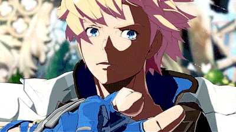

Ky was born during the Crusades. His mother died when he was very young at the hands of the Gear War. This led him to Kliff Undersn, the leader of the Holy Orders, who Ky asked for permission to join. He was an instrumental part of the Order's victory against Justice. Eventually, he became the First King of Illyria, ruling over the entire kingdom. He would prove to be one of the most influential players in defeating Testament, Justice, Valentine, the Universal Will, and Happy Chaos. Throughout his life, Ky always struggled to see things in more ways than just good or evil, but throughout his life he learned what he believes in, and found his goal. He has married Dizzy the daughter of Justice, and fathered a son named Sin Kiske. Due to the shared genes of Justice and Sol in Dizzy, this has led Ky to painfully realize his best friend Sol is now his father-in-law as well as the grandfather of his child.
